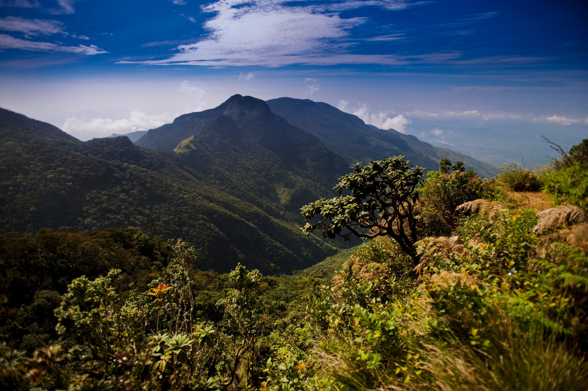

Nuwara Eliya, nestled in the heart of Sri Lanka's hill country, offers a serene escape with its lush tea plantations, cool climate, and picturesque
landscapes. Visitors flock to this charming town to explore attractions like Horton Plains National Park, home to the breathtaking World's End cliff, and the
cascading beauty of Lovers Leap Waterfall. The town itself exudes colonial charm, with its well-preserved British architecture and the iconic Lake Gregory, where
leisurely boat rides and strolls along its tranquil shores beckon. Travelers can also immerse themselves in the region's rich tea heritage with visits to tea
factories and plantations, such as the renowned Pedro Tea Estate, offering an insight into the art of Ceylon tea production. Nuwara Eliya's blend of natural splendor
and cultural richness promises an unforgettable experience for every visitor.
1. Hakgala Botanical Garden
Hakgala Botanical Garden, situated in the enchanting hill country of Sri Lanka near Nuwara Eliya, is a botanical paradise renowned for its diverse
flora and stunning landscapes. Established in 1861 during the British colonial era, the garden sprawls across 28 hectares of land, offering visitors a tranquil
retreat amidst lush greenery and vibrant blooms. The garden boasts a rich collection of indigenous and exotic plant species, including orchids, roses, ferns, and
medicinal herbs, showcased in themed sections such as the Orchid House and the Fernery. One of its highlights is the Hakgala Rock, a massive outcrop that adds to
the garden's scenic charm. Visitors can leisurely stroll along winding paths, marvel at the breathtaking views of the surrounding hills, and immerse themselves in
the peaceful ambiance. Hakgala Botanical Garden is not only a botanical marvel but also a haven for nature lovers seeking serenity and beauty in Sri Lanka's
picturesque hill country.
Hakgala Botanical Garden serves as a haven for biodiversity, providing habitat for various species of birds, butterflies, and small mammals amidst
its verdant surroundings. The garden's serene ambiance and cool climate make it an ideal spot for leisurely picnics, nature walks, and photography
enthusiasts capturing the essence of its natural splendor. Additionally, the garden holds cultural significance, with its historical ties to ancient
legends and myths, adding an intriguing layer to the visitor experience. Whether exploring the colorful flower beds, seeking shade under the towering
trees, or simply soaking in the peaceful atmosphere, a visit to Hakgala Botanical Garden promises a memorable journey into the wonders of nature and
horticulture in the idyllic setting of Sri Lanka's hill country.
2. Lover’s Leap Waterfall
Lover's Leap Waterfall, nestled in the scenic hills of Nuwara Eliya, Sri Lanka, is a captivating natural wonder steeped in legend and beauty.
Cascading gracefully from a height of approximately 30 meters, the waterfall derives its name from a tragic love story of a prince and his forbidden lover,
who are said to have leaped from the cliffs above. The picturesque surroundings of dense forests and verdant hillsides create a mesmerizing backdrop for the
waterfall's pristine waters as they plunge into the rocky pool below. Visitors to Lover's Leap are greeted by the soothing sound of rushing water and
enveloped in a tranquil ambiance ideal for relaxation and reflection. The site also offers opportunities for nature walks and photography, allowing visitors
to capture the ethereal beauty of this enchanting waterfall against the lush greenery of Sri Lanka's hill country. Lover's Leap Waterfall stands as a
testament to the enduring allure of nature and the timeless tales that weave through its majestic landscapes.
Legend has it that Lover's Leap Waterfall holds mystical powers, with locals believing that the waters possess healing properties and bring good
fortune to those who visit. The surrounding area, rich in biodiversity, offers glimpses of native flora and fauna, adding to the allure of this natural sanctuary.
Adventurous souls can embark on scenic hikes through the surrounding trails, immersing themselves in the untouched beauty of the wilderness. Whether seeking
solace in nature's embrace or embarking on a journey of exploration, Lover's Leap Waterfall captivates the hearts and imaginations of all who venture to experience
its enchanting splendor.
3. Ambewela Farm
Ambewela Farm, nestled in the misty hills of Nuwara Eliya in Sri Lanka, stands as a beacon of agricultural excellence and sustainability.
Spread across acres of rolling green pastures, Ambewela is renowned for its dairy products and high-quality livestock. The farm's idyllic setting,
characterized by cool temperatures and fresh mountain air, provides an ideal environment for the production of premium dairy goods. Visitors to Ambewela
Farm can witness firsthand the meticulous process of milk production, from grazing cows on lush fields to state-of-the-art milking facilities. The farm's
commitment to sustainable practices is evident in its efforts to conserve natural resources and maintain the ecological balance of the surrounding landscape.
Moreover, Ambewela Farm offers visitors the opportunity to indulge in a range of dairy products, including fresh milk, yogurt, cheese, and ice cream, all made from the
finest ingredients. The farm's onsite dairy outlet provides a delightful experience for taste enthusiasts, allowing them to sample and purchase a variety of
dairy delights. Beyond its agricultural endeavors, Ambewela Farm also serves as an educational hub, offering guided tours and interactive sessions that
highlight the importance of sustainable farming practices and the journey of milk from farm to table. With its scenic beauty, commitment to quality, and
educational offerings, Ambewela Farm stands as a shining example of Sri Lanka's rich agricultural heritage and its dedication to nurturing the land for future
generations.
4. Sri Pada
Sri Pada, also known as Adam's Peak, is one of the most sacred and revered pilgrimage sites in Sri Lanka, drawing devotees and travelers
from far and wide. Located in the central highlands of the island nation, this majestic mountain stands at an elevation of 2,243 meters and is distinguished
by a distinct conical shape. What makes Sri Pada particularly significant is the footprint-shaped impression at its summit, which is revered by Buddhists as
the footprint of Lord Buddha, by Hindus as the footprint of Lord Shiva, and by Muslims and Christians as the footprint of Adam, hence the name "Adam's Peak."
The pilgrimage to Sri Pada is not merely a physical journey but a spiritual odyssey for many devotees. The ascent typically begins in the late evening or
early morning, as pilgrims brave the steep and winding trails illuminated by oil lamps and torches. The climb, which consists of thousands of steps, is a
test of endurance and faith, with devotees chanting hymns and prayers along the way. As the first light of dawn breaks, pilgrims reach the summit, where
they are greeted by the breathtaking spectacle of the sunrise painting the sky in vibrant hues, casting a mystical glow over the surrounding landscape.
At the summit of Sri Pada lies the sacred footprint, enshrined within a small temple, where devotees offer prayers and seek blessings. The panoramic views
from the peak, stretching across mist-shrouded valleys and emerald-green hills, instill a profound sense of awe and tranquility. Descending the mountain,
pilgrims carry with them a sense of spiritual fulfillment and renewal, having undertaken a journey of devotion and self-discovery. Sri Pada, with its blend
of natural beauty and religious significance, remains a timeless symbol of faith and reverence in the heart of Sri Lanka's cultural heritage.
5. Lake Gregory
Lake Gregory is one of the most attractive natural places in Nuwara Eliya. It was built by Governor Sir William Gregory in the Britain colony
era in 1873. In this era, lake was built with the purpose of electricity generating. After, lake and the park recreate on leisure and tourism purpose. Park
is recreated with beautiful flowers, trees, and green grass. The total surface area is 91.2ha (225 acres) and surface elevation 1,874m (6,184 ft). The lake
is surrounded by mountains, that gives scenic natural view to the visitors.
At the movement, Lake Gregory is one of the prominent places among foreign and local tourists. Usually, the park is open from 8.30 AM to 6.00 PM
and you need to buy a ticket to a small fee for entrance (Phase I). Lake Gregory is one of the most beautiful destinations for seaplanes. This domestic air
taxi service provides from Colombo (Ratmalana) to Lake Gregory. You can reach within 30 minutes from Colombo if you use this service. In addition to that,
there are a number of adventure and fun games at the park. Boat rides (Swan, Speed and Dinky boats), Pony rides, Cycle rides are available for affordable
prices.
6. Horton Plains National Park
THorton Plains National park is a state-protected area which enhances the beauty of Nuwara Eliya. The park is categorized in two as wet
patana and sub-tropical mountain evergreen forest. Wet patana consists of 2000 hectares and sub-tropical mountain evergreen forest with 1,160 hectares.
Horton plains are one of the most important watersheds in Sri Lanka. It is the headwater of three main rivers, Mahaweli, Kelani and Walawe rivers.

This is the most diversified park in Sri Lanka. Sambar deer, bird species and many other restricted species live in this park. There are 24
species of mammals, 87 species of birds, 09 species of reptiles and 08 species of amphibians. Around 750 species of plants belonging to 20 families are beautified
the park. In addition, World’s End and Baker’s falls add more stunning view to the park. Further, it has a long history which provides the evidence of stone tools
belongings to Balangoda era.
Another legend “Ramayana” falk story also a binder with Hortain Plains. There is a belief that King Rawana landed his aircraft to Thotupala mountain in
Hortain plains. According to the story, King Rawana abducted Rama’s wife Seetha to take revenge for cutting his sitter’s nose. Then Rama came with an army
and monkey human (Hanuman). Rawana’s army caught Hanuman and set fire to his tail. He ran and set fire to Horton Plain with his tail and it lasted for a long
time. Because of this historical value and scenic beauty of nature, it was named as a national park in 1988. Its evaluation range is between 1,200 and 2,300m.
Temperature is highly versatile in the day, will be raced up to 27 Celsius and 5 Celsius at night. Usually, the average temperature is recorded as 13 degrees
Celsius. During the monsoon period, wind speed is gale face.
7. Bomburu Ella Waterfall
Bomburu Ella is one of the amazing art of nature in Sri Lanka. It is also called as Perewella Ella and locates in Uva Paranagama in Nuwara Eliya
district. This is the widest waterfall in Sri Lanka. According to calculations, it is 50m high and it’s a combination of several waterfalls. The fall is
enriched with upper tributary of Uma River which is located in the central highlands.
Bomburu Ella is located in the Seetha Eliya Kandanpola forest reserve which is 15Km away from Welimada town. This is the place where legend
says, Seetha was hidden after the abduction. Due to this legend, this place has a huge historical value. Further, it is one of the most beautiful landmarks,
situated close to the border of Nuwara Eliya and Badulla districts. At the top of the fall, the view is spectacular, which presents the scenic beauty of
nature. Water cascading view, green forests, rocks and mountains in neighborhood provides proper evidence for charming beauty of nature. Picnic and bathing
are allowed to visitors but camping is prohibited by the government. Bomburu Ella is not for beatifying Nuwara Eliya but also it provides a huge service to
the Sri Lankan Nation. It provides the electricity-generating service to the powerhouse and delivered water to villagers for their cultivation. Due to these
reasons, Bomburu Ella considers as a valuable natural asset in Sri Lanka. Because of that, fall is very popular with both local and foreign tourists.
Swimming in a natural pool and water cascading view will add a unique experience to your travel log.